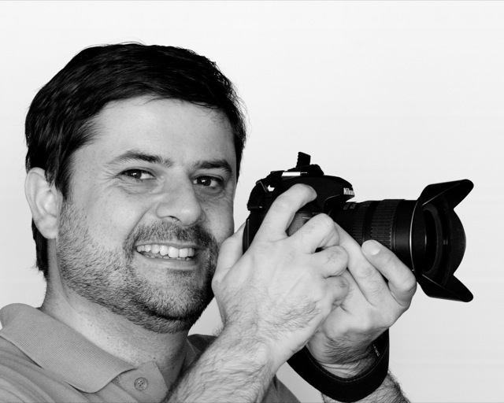
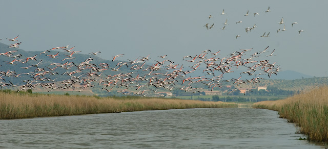

Series: Meet the Dream Team Members
(In January 2007, we announced the 11
charter members of the NetBeans
Dream
Team, a community-oriented group of highly skilled NetBeans users
devoted to promoting NetBeans and working on the NetBeans Project. In
these interviews discover who they are, why they are passionate about
NetBeans and what goals they have for the NetBeans project.)
Fabrizio Giudici

Please tell us a bit about yourself and how you discovered NetBeans.
Well, I'm a Java
enthusiast and work primarily as a Java Architect. I
run my own company: Tidalwave s.a.s;
it's
essentially a one-person firm, so it's more appropriate to say I'm a
freelancer. Since last year, I've worked mostly with SourceSense s.r.l. I live as a
quantic particle with spread
over Northern Italy, with the highest probabilities of realization in
Genoa
and Milan.
I had my first experience with NetBeans circa version 3.6 as a support
for teaching Java courses for Sun Educational Italy. At the time, most
Italian instructors used NetBeans
since it was much to have students not get lost while
writing their first EJB, for example. But at the time I thought it was
too slow and
good only for teaching. Eclipse was more productive and
was my favourite IDE until the beginning of 2006. NetBeans 5.0
had just been released and I was a skeptic. But I think that
every prejudice should be validated (or invalidated) by proof, so I
started playing with it. After some months, I understood the potential
of the new NetBeans—it was a completely different product. When 5.5
came out (and being aware of the roadmap to 6.0), I abandoned Eclipse.
What are your thoughts on the previews of NetBeans 6.0?
I've been using Milestone 10 for production (J2SE and J2EE)
since July, and I completed the conversion of my RCP applications this
summer. I've just done some minor adjustment this past week to
upgrade to 6.0 Beta 1. The changes to NetBeans since 4.x are
unbelievable and the gap with Eclipse has been completely filled in
most areas. I find NetBeans much better for things such as J2EE
development, but the Rich Client Platform is probably the thing that I
like more.
Let's put you in the hot seat! What are some things NetBeans could
do
better?
The team in Prague has done an excellent job. The roadmap from 5.0 to
5.5 to 6.0 has been pretty dead-on to recover lost ground. Today we
have an IDE with excellent support for J2EE; an excellent Swing
designer; support for other languages such as Ruby (and the Schliemann
Project will foster support for even more); an effective debugger and
an unbelievable profiler. Everything out-of-the-box! Now people must
concentrate on stability and improving performance for 6.0 FCS. (I also
hope that UML and J2ME problems with Mac OS X will be addressed in some
way, even though they depend on factors that are out of Sun's control.)
The next steps must include even better refactoring support and looking
at IDEA as an ideal target. Today we already have Jackpot, a
refactoring engine that can be programmed with a declarative language,
but we need stuff ready to work in a few keystrokes.
You'll be attending and presenting at the three NetBeans
Software Days scheduled this month in Italy—Rome, Milan and
Cagliari.
Can
you give us an overview of your presentation: ”Sailing on NetBeans
Platform”?
It's an introduction to the Rich Client Platform based on my
experience with an open source project named blueMarine, a platform for
managing photo workflow. It's something I started working on in 2003
initially for fun just after I bought my first digital reflex
camera. In the presentation, I'll share my experience with
blueMarine, from the first two years of development which were
frustrating because Swing was too slow and lacked a serious platform,
until I completely redesigned the application on top of the NetBeans
Platform.
Why did you create blueMarine? How does it differ from other photo
management applications?
During my first years with serious photography, I realized that I was
deeply unsatisfied with existing software on the market. You needed one
software for editing, one for cataloguing, another for publishing, and
so
on. Also, I had a vision of a generic expandable platform that
would go beyond mere cataloguing and editing, and instead include some
of the cool stuff that we have today, such as geotagging, the ability
to associate geographic coordinates to a photo and use
them to share the photo or plan new trips. I also wanted the program to
be an
open platform where people could integrate their own stuff. Of course,
several years later the panorama has changed, and we have programs such
as Adobe Lightroom and Apple Aperture. Still I feel that they are not
expandable and open enough, and Linux is lacking such a comprehensive
application.
What were the benefits of using the NetBeans Platform for
blueMarine?
The added value is that it's Swing. Before the NetBeans experience I
had looked quickly at Eclipse RCP; at the time it was probably the only
viable framework for developing desktop applications. But I hated the
idea of learning a new set of APIs —Eclipse is based on its own SWT—and
throwing away my knowledge, even though limited at the time, of the
Swing APIs. Furthermore, I felt that if you deal with photography you
need to provide a pleasant user interface beyond mere effectiveness.
Swing had a good foundation in this area, even though developing a new
Look-and-Feel was a pain initially. Today Swing provides a
huge set of Look-and-Feel choices (Substance, Synthetica, Nimrod, to
mention a few) and when Jasper Potts finishes his new Nimbus
Look-and-Feel and the related
design tools we'll go another leap forward. And with the tremendous
evangelizing effort of people such as Romain Guy, people tdday should
have no doubt about Swing's ability to realize rich clients. As far as
I know, there's nothing of the sort in the SWT world.
Is there a strong community of NetBeans users in Italy? Are the
three
NetBeans Software Days a strategy to grow one among Italian
developers?
Really, I don't know. The coming NetBeans Days will be our chance to
measure the Italian enthusiasm about NetBeans and to get direct
feedback. In the following months and in 2008 I plan to travel a bit
and visit the many JUGs we have in Italy to get an even better picture
and spread the word about NetBeans. Some JUGs are working on some cool
initiatives about NetBeans, but they are in the early stages and I
prefer not to disclose details now.
Let's talk about the Dream Team: How has it enhanced your
participation
in the NetBeans project?
The Dream Team is a wonderful idea. You know, it's not only that you
have a direct channel to Sun Engineers, Evangelists and the other
excellent professionals on the NetBeans team, it's also a matter of
“feeling like part of a team”. I mean it's not only about the
technology, there's the human value in it. It's really stimulating.
What's next in your efforts as a “Dream-Team-er”? Is there a
project you want community help
with?
I think I've received a lot from the Dream Team (both technically and
in enthusiasm), but I'm not satisfied with what I have given back so
far. I plan to improve my contributions in 2008. On the whole, the
Dream Team is producing very good results and thoughts, but it can do
much more. When we are able to work more closely maybe on a common
activity, we will experience a quantic leap. At the moment the fact
that we are physically apart is perhaps a limiting factor, and I hope
that during one of the next major conferences most of us will be able
to meet personally. Yes, it is the age of Second Life—which I hate, by
the way—but shaking hands and laughing together is still another thing.
How long have you been into photography?
I have liked photography since I was a child, but I jumped into it
seriously around 2002. The previous year had been a challenging one
psychologically and
photography was my release. But now it's much more than just
therapy—it's a real passion. Sometimes I think that I work just for it!
I'm a Nikonian—I own a Nikon D200, a D70 and a D100 (unfortunately, the
latter two are out of order as of this summer), and a good set of
prime lenses. While in the first years I went almost exclusively for
birds, now I do a lot of landscapes and some architecture too.
Do you get feedback from other photographers about blueMarine?
I've gotten limited feedback, but this has been intentional—I prefer to
wait until blueMarine is usable before talking to the photographers'
communities. But some people have already given feedback and inspiring
reviews. For instance, Emmanuele
Sordini,
one of my best friends, is an amateur astrophotographer and talked to
me about a unique way of processing photos of planets, called “image
stacking”, which today is only available as part of a specific
software. We got mutually excited about what we were doing, and as a
result Emmanuele wrote a Java version of "image stacking" and
integrated it into blueMoon,
the first core of a blueMarine plugin for
astronomic photography. Together we also developed the capability of
run tasks in a local grid (using Jini and Rio) and even deployed them
on the Sun Grid. (We have already demonstrated some prototypes that
will be available out-of-the-box very soon). Now I hope to repeat this
kind of experience with other photographers and other scenarios.
You've got some incredible shots on your photo website. When do
you find
time to practice your hobby?
At the moment, the site shows only
a fraction of my latest photos. There's plenty of old stuff that
I should probably remove. When I complete publishing capabilities of
blueMarine many others will follow. Finding time is a challenge, but I
try to match it with my business
travels. For instance, I try to avoid planes while traveling in Europe.
I prefer driving but avoid highways as much as I can. There's an
infinite number of things to discover along white roads! Last year, I
went to JavaPolis by driving three days to Antwerp and two days on the
back journey. It was beautiful, and I'll do it again this year.
Furthermore, I think I'm lucky to live in Genoa and Milan: Tuscany is
just a few hundreds kilometers east-bound, Provence a few hundreds
kilometers west-bound–they are probably the two most beautiful regions
in the world. I'm there as often as I can.
Oh, and traveling matches another passion of mine: gastronomy. :-)
Give us one of your latest shots.

Fabrizio, Thank you for sharing your thoughts and passions with us.
Good
luck with your presentations at NetBeans Day, and with blueMarine!
(September
2007)
More Dream Team Profiles
Adam
Bien
Emilian
Bold
Vincent
Brabant
Wade
Chandler
Joerg
Plewe
Vinicius
Senger
Edgar
Silva
Ibon
Urrutia